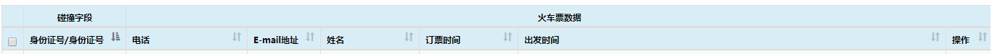

前言
最近项目中在使用能够拖动列调整列位置顺序的表格插件---DataTables,这也是目前我找到的唯一一种存在有这种功能的插件。
在查找使用方法的过程中发现可用案例并不多，且大多言语不详。本文将全面介绍此插件的使用过程。
如果不是有拖动列调整列位置顺序的需求，建议不要使用此插件，坑点较多。后面有时间我会写一个名为Bootstrap-table表格插件的使用方法，使用起来比这个插件强多了
正文
中文官网：http://www.datatables.club/
建议多多参考英文官网中reference(参考)https://datatables.net/reference/index和中文官网中的文档http://www.datatables.club/reference
下载文件时尽量不要在中文官网下载，因为下载不到需要的表格的其他插件，英文官网下载地址：https://datatables.net/download/index
下载方式就是选择，Bootstrap，JQuery，DataTables，以及下面插件中ColReorder（此插件是拖动列所需的），在此只是提议，如何下载诸君自选
服务器分页方式
注意，本文只介绍服务器分页方式，因为客户端分页方式很简单，创建表格时写上必要的参数，然后把数据传入表格就完成了
DataTables是基于JQuery和Bootstrap的，所以在使用此插件前需引入这两个库（框架）所需的文件
引入在其他地方下载后的JQuery和Bootstrap及在DataTables官网下载的文件
html代码如下：
<table class="table table-striped display table-bordered" style="margin: 0;" cellspacing="0" width="100%" id="table"></table>
js代码如下：
服务器配置代码：
踩坑:特别注意,这里的交互必须写在表格的ajax配置项里,如果写在其他地方传入数据,则点第二页后的页数时显示的页数总是第二页,且第一页无法点击
let judgeTable = 0;
function table() {
if(_this.judgeTable) {//这里是为了在初始化时表格不销毁，否则会报错
$('#table').DataTable().destroy();//销毁表格
}
_this.judgeTable = 1;
$('#table').DataTable({
colReorder: true,//启动列拖动
scrollX: true,//左右滚动条
ordering: false,//排序
searching: false,//参与搜索
lengthMenu: [10, 25, 50, 100],//设置分页大小选择项目
pageLength: _this.pageSize,//设置分页大小
displayStart: _this.pageNum - 1,//设置当前表格在第几页,从0开始
serverSide: true,//是否开启服务器分页
order: [[1, 'asc']],//asc按升序,desc按降序
ajax: function (data, callback, settings) {
//data参数中,data.length是单页记录条数;data.start是开始的记录序号;(data.start / data.length)+1是当前页码
$.ajax({
url: _this.$ajaxConfig.url + "role/page?pageNum=" + _this.pageNum + "&pageSize=" + _this.pageSize,
type: "GET",
contentType: "application/json",
cache: false,
xhrFields: {
withCredentials: true
},
success: function (result) {
if(result.code == 0) {
let dataTable = [];
//修改行数据字段数据,以使表格识别,其中result是你要放到表格中的数据，如果你获取到数据的字段和你在设置配置columns中的一致，则省略这个步骤
result.data.list.forEach(function (item,index) {
dataTable.push({
id: item.id,
name: item.name,
remark: item.remark,
enableEdit: item.enableEdit
})
})
//修改设置数据字段,以使表格识别
var returnData = {
recordsTotal: result.data.total,
recordsFiltered: result.data.total,
data: dataTable
};
callback(returnData);
}
},
error: function (error) {
console.log(error);
}
});
},
columns: [//列设置
{
data: null,
checkboxes: {//这里是复选框
selectRow: true
}
},
{
title: "用户名",
data: "userName",
},
{
title: "描述信息",
data: "remark"
},
{
title: "编辑用户状态",
data: null,
render: function (data, type, row, meta) {//render内设置此列单元格内容，我这里是设置了按钮
//row是json对象行数据，放到元素中时需转为json字符串
let rowData = JSON.stringify(row);
let className = '';
let elementText = '';
if(row.flag) {
className = 'csbtn-yes';
elementText = '启用';
} else {
className = 'csbtn-no';
elementText = '禁用';
}
//这里特别需要注意的是传输数据rowData不能使用双引号包含，要么使用单引号，要么不使用引号
return "<span class='csbtn " + className + "' data-table=" + rowData + " >" + elementText + "</span>";
}
}
],
"language": {
"lengthMenu": "每页显示 _MENU_ 条数据",
"emptyTable": "暂无数据",
"info": "显示 _START_ 到 _END_ 共 _TOTAL_ 条",
"infoEmpty": "显示 0 到 0 共 0 条",
"infoFiltered": "(从 _MAX_ 条中过滤)",
"thousands": ",",
"loadingRecords": "加载...",
"processing": "加载中...",
"search": "搜索:",
"zeroRecords": "未找到相关数据",
"select": {
"rows" : ""
},
"paginate": {
"first": "第一页",
"last": "最后一页",
"next": "下一页",
"previous": "上一页"
}
},
});
}
表格的相关事件：
踩坑:事件不要与创建表格代码写在一个函数内，否则单次触发事件后触发的次数会随着点击次数的增加，如：第一次触发一次，第二次点击后会自动触发两次
改变分页大小事件：
$('#table').on('length.dt',function(e,settings,len) {
pageSize = len;//改变存储分页大小的变量，len为改变后的分页大小
});
换页事件：
$('#table').on( 'page.dt', function () {
pageNum = $('#table').DataTable().page() + 1;//改变存储当前页数的变量，$('#table').DataTable().page()方法获取到的是从0开始的当前页数
});
初始化事件：
$('#table').on('init.dt',function(e,settings,len) {
console.log(e,settings,len)
});
选中行效果事件:
踩坑1:在添加点击事件时,必须先使用off()移除事件,否则在不刷新页面的前提下再次触发表格重新渲染后会导致点击一次后触发多次事件
踩坑2:这里设置属性checked时使用的是JQuery的prop方法,坑点是必须不能使用attr来设置属性(使用后当点击过复选框之后再设置此属性则无效),因为JQuery在1.6版本后引入了一个prop这个方法，专门用来获取表单属性
$(document).off( 'click', '#role-table tbody tr');
$(document).on( 'click', '#role-table tbody tr', function () {
//为每行设置类名，并且操作复选框
if($(this).hasClass('selected')) {
$(this).removeClass('selected');
$(this).find('td>input').prop("checked",false);
} else {
if(!$(this).hasClass('estimateRole')) {
$(this).addClass('selected');
$(this).find('td>input').first().prop("checked",true);
}
}
});
//点击复选框是不会选中行的，所以还需要为复选框设置事件
$(document).on( 'change', '#role-table tbody tr td input', function () {
if($(this).parent().parent().hasClass('selected')) {
$(this).parent().parent().removeClass('selected');
$(this).parent().parent().find('td>input').prop("checked",false)
} else {
$(this).parent().parent().addClass('selected');
$(this).parent().parent().find('td>input').first().prop("checked",true)
}
});
$('#table').DataTable().rows('.selected').data();//获取选中的行（带有相应类名的行）
多层表头：
使用多层表头时，配置中的column需要换成columnFefs
columnDefs: [
{
"targets":[0],//第一列
"orderable": false,
"render": function (data, type, row, meta) {
var text = "<input class='single-check-input' type='checkbox'>";
return text;
}
},
{
"targets":["json"],//最后一列
"render": function (data, type, row, meta) {
console.log(data)
var text = "";
text = "<a href=# onclick=showCollisonJsonData(this)>查看详情</a>"
return text;
}
},
]
配置表头函数：
function configComplexHeader(headerInfo) {
let _this = this;
var theader = $('#detail-table-header');
var headrFirstRow = $('<tr></tr>');
var childHeaders = [];
headerInfo.forEach(function (singleHeader) {
var headerName = singleHeader.name;
var colspanNum = singleHeader.childList.length;
var thE = $('<th></th>',
{
colspan: colspanNum,
text: headerName,
style: "text-align:center"
}
);
headrFirstRow.append(thE);
(singleHeader.childList).forEach(function (childObj) {
var childHeadTitle = childObj.name;
if (childHeadTitle === "json_data") {
childHeadTitle = "操作";
}
childHeaders.push(childHeadTitle);
});
});
var tmpThE = $('<th/>',{
colspan: 1,
});
headrFirstRow.prepend(tmpThE);
var headerSecondRow = $('<tr></tr>');
childHeaders.forEach(function (childHeader) {
var className = "normal";
if (childHeader === "操作") {
className = "json";
}
headerSecondRow.append($('<th/>',{text:childHeader,class: className}));
});
var tmpSecThE = $('<th></th>',{
class: "check-all-input-th",
html: "<input type='checkbox' class='check-all-input'>"
});
headerSecondRow.prepend(tmpSecThE);
theader.append(headrFirstRow);
theader.append(headerSecondRow);
}
//表头数据
var headerInfo = [{"name":"碰撞字段","childList":[{"field":"col_c_cardno_3_0","name":"身份证号/身份证号"}]},
{"name":"火车票数据","childList":[{"field":"c_mobile_1_0","name":"电话"},{"field":"c_email_2_0","name":"E-mail地址"},{"field":"a_name_1_0","name":"姓名"},{"field":"a_time_2_0","name":"订票时间"},{"field":"a_time_3_0","name":"出发时间"},{"field":"json_data_0","name":"json_data"}]},
{"name":"户政人口","childList":[{"field":"a_name_1_1","name":"姓名"},{"field":"a_sex_2_1","name":"性别"},{"field":"a_address_3_1","name":"地址"},{"field":"a_marriage_4_1","name":"婚姻状况"},{"field":"a_edu_level_5_1","name":"文化程度"},{"field":"a_company_6_1","name":"单位"},{"field":"a_address_7_1","name":"籍贯"},{"field":"a_nation_8_1","name":"民族"},{"field":"json_data_1","name":"json_data"}]}]
configComplexHeader(headerInfo);
效果图如下：
